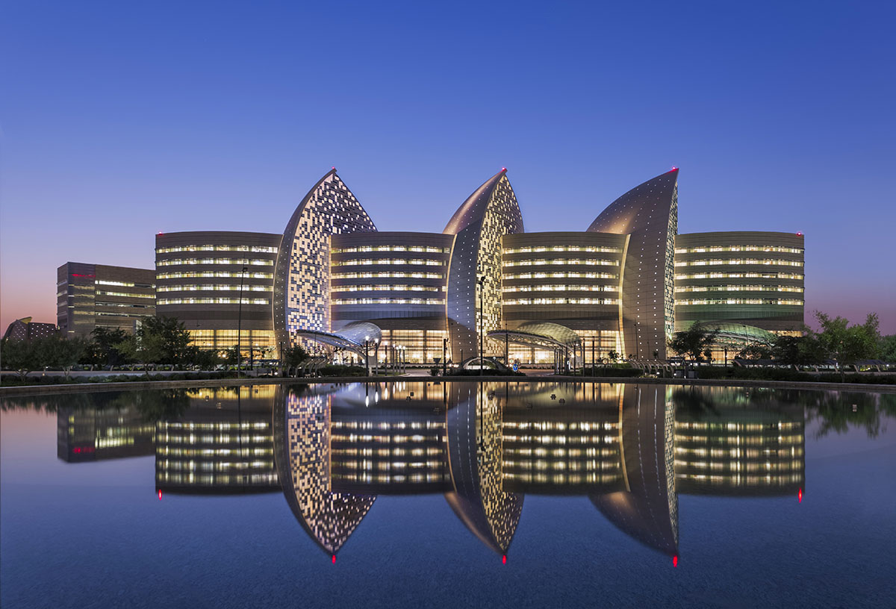
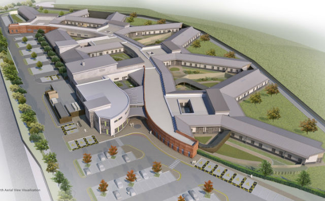
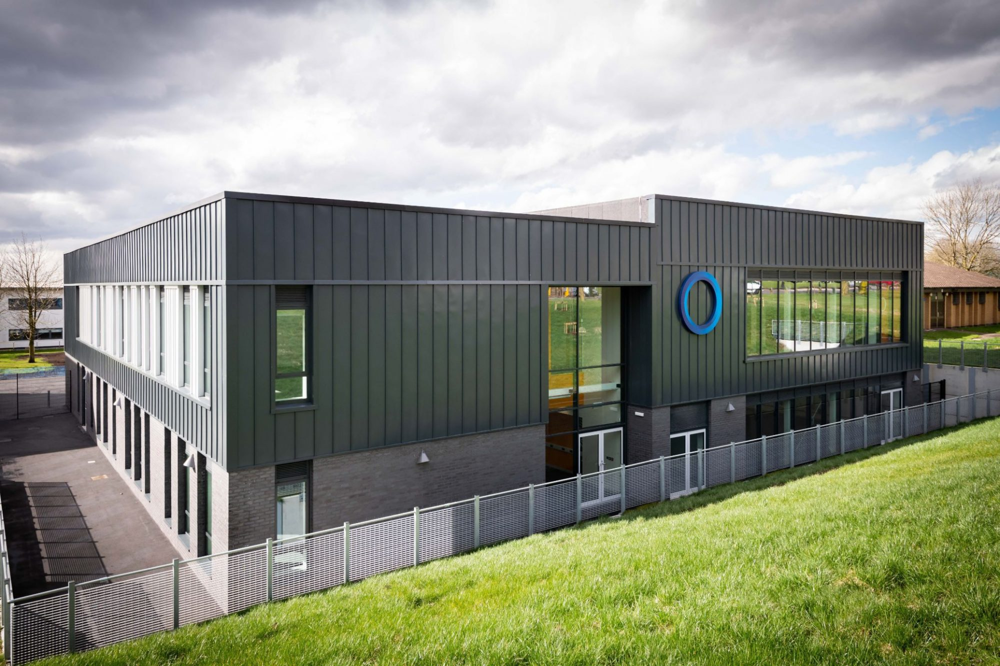
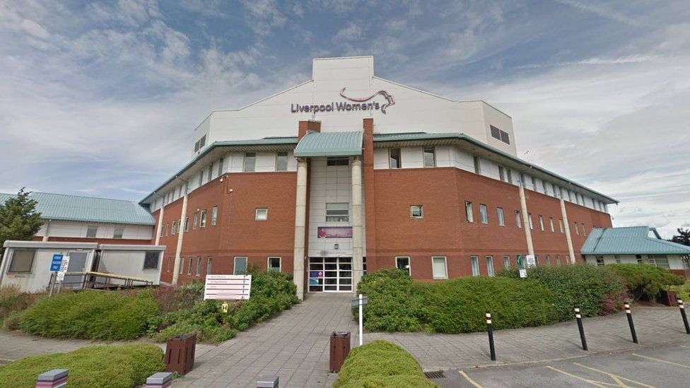
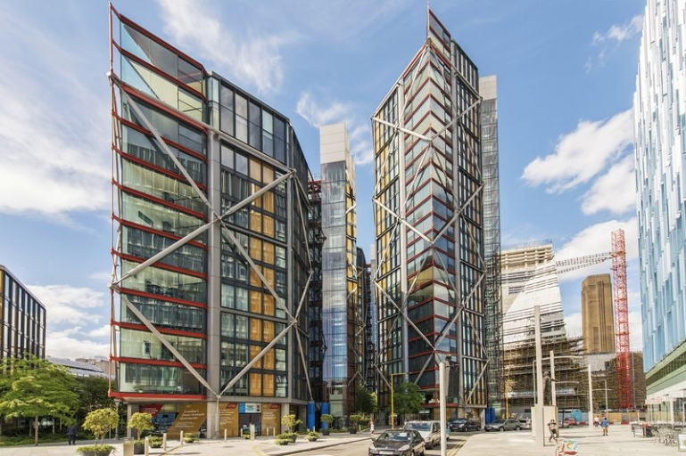
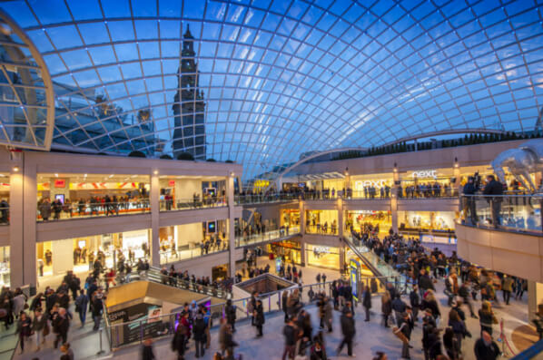

SIDRA MEDICAL & RESEARCH CENTRE, QATAR

A £1.2Bn world class healthcare, research and teaching facility. The 200,000m² hospital building houses three individual hospital divisions (children, women and adult patients) and 500 single bedded rooms. In addition to major
hospital provision, the new build teaching and research facilities are extensive providing on-site teaching, conferencing and auditoria.
The Harbour, Whyndyke, Blackpool

£40M new build mainly single storey low secure facility. Provides high quality care with a therapeutic, purpose designed environment. Specific areas are: Dementia unit, Advanced care unit; Functional acute unit; Paediatric intensive
care unit and Section 136 Unit.
Oldham College, Gtr.Manchester

Major redevelopment of the College campus including masterplanning, new build and refurbishment. The first phase, Building A is a new build 14-19 Learning Hub which has been designed using Revit. Building B is an Innovation Hub and is
also designed in Revit.
Liverpool Women’s Hospital, Liverpool

£14M project undertaking new build and refurbishment ProCure21 schemes: The Centre for Women’s health and the ‘Big Push’ scheme. Including remodelling the Patient Pathway and reconfigure maternity & pre/past-natal care services.
NEO Bankside, London

This £115 million mixed development is situated next to the Tate Modern gallery in Southwark. The project comprises 229 ‘high end’ apartments, gym and retail units. The project is a joint venture between Grosvenor and Native Land
Developments with the notable ‘external structure’ architecture being designed by Rogers, Stirk and Harbour.
Trinity Shopping, Leeds

A new retail and leisure development of 120 outlets, with 25% of the space dedicated to food and leisure facilities. There is a dedicated food area called ‘Trinity Kitchen which is ‘the first indoor street food venue’ which allows for
flexible services to allow food stalls to set up ‘pop up’ street food stalls and rent the area out for a short period of time.